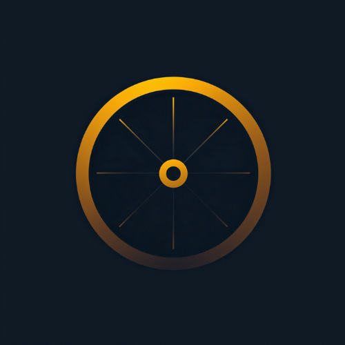

Garmin向けウォッチフェイス・データフィールド・アプリ一覧
SIGN(佐藤雄一)が作り、Garmin Connect IQ ストアで公開している、Garmin 向けのウォッチフェイス・データフィールド・アプリの一覧です(2026年11月26日時点で16本)。種類ごとに、どんな製品か、無料か有料か、試用できるかをまとめました。どれも個人が作った製品で、Garmin の公式の製品ではありません。
高級アナログのウォッチフェイス
高級時計の文字盤の雰囲気を、Garmin の画面で楽しむためのアナログのウォッチフェイスです。どれも設定から仕上げを切り替えられます。
Aurum
ゴールドのウォッチフェイス。画面に枠を描かないフレームレスの設計で、6つの仕上げを1本に収録しています。
Platina
ゴールドを使わない、冷たい金属の色合いのアナログのウォッチフェイス。5つの仕上げと3つのレイアウト(Dress・Moonphase・GMT)で15通りに切り替えられます。
Empress
宝石をあしらったクロノグラフ風のウォッチフェイス。Sapphire・Emerald・Ruby・Amethyst・Diamond White の5つの仕上げを収録しています。
デジタルのウォッチフェイス
大きなデジタルの時刻に、データや絵を組み合わせたウォッチフェイスです。
Overwatch
5つのデータレイアウト(Cockpit・Track・Trail・Recovery・Night)を1本に収録し、オートモードでは場面に応じて切り替えます。
サイ＆ジーノ
SIGN のふたごのキャラクター、サイとジーノが時刻の下に並ぶウォッチフェイス。朝・昼・夕方・夜で空と絵が替わり、歩数の目標に届くと喜ぶ絵になります。
和菓子パステル
1月の花びら餅から12月の雪うさぎまで、月ごとの和菓子の絵と、それに合わせたやさしいパステルの色に替わるウォッチフェイスです。
和の暦のウォッチフェイスとアプリ
六曜や旧暦など、日本の暦の情報を手首で見るための製品です。暦の上の吉日や潮回りは、暦にもとづく目安です。季節の和菓子のウォッチフェイスは、上の「デジタル」の和菓子パステルです。
吉日ウォッチ
六曜と、一粒万倍日・天赦日など暦の上で吉日とされる日を表示する和風のウォッチフェイス。御朱印・月と夜の海・江戸の和時計の3つのデザインを収録しています。表示は日本語です。
吉日カレンダー
これから180日の吉日を時計で一覧できるアプリ。今日の六曜・旧暦・開運度も表示します。表示は日本語です。
潮回りウォッチ / 潮回りウォッチ Lite
今日の潮回り(大潮・中潮・小潮・長潮・若潮)と月齢を表示する、釣り向けのウォッチフェイス。旧暦の日付による目安で、満潮・干潮の時刻や潮位は表示しません。
※ 潮回りは暦による目安です。航行や安全にかかわる判断には使わないでください。
2026年11月〜2027年12月の一粒万倍日・天赦日の一覧を見る →
データフィールドとアプリ
登山・自転車のアクティビティの画面に追加するデータフィールドと、タイマーのアプリです。無料版と、項目や機能を増やした有料の Pro 版を、別のアプリとして公開しています。
Cairn
登りのために作った、ハイキング用のデータフィールド。標高・累積標高・勾配など6項目を1画面に表示します。
Cairn Pro
Cairn の上位版。VAM・登坂目標までの残り・日没までの時間などを加えた12項目を1画面に表示します。

Cairn Cycle
速度・パワー・ケイデンスのために作った、サイクリング用のデータフィールド。6項目を1画面に表示します。
Cairn Cycle Pro
Cairn Cycle の上位版。速度・パワーの平均値や登坂のデータを加えた12項目を1画面に表示します。
Multitime
名前つきのタイマーを、同時に3個まで動かせるタイマーのアプリです。
Multitime Pro
Multitime の上位版。タイマーは最大20個、タイマーごとに違う振動、プリセットの保存ができます。
使う前に確かめること
- お使いの Garmin で使えるかは、製品ごとに違います。機種別の対応早見表を見る
- Multitime Pro はタイマー3個まで無料で使えます。ほかの有料の製品は、買う前に無料で試せます(試用の長さは製品ごとに上のとおり)。支払いは Garmin ではなく、第三者のサービス KiezelPay が扱います(買い切り。月額などの継続課金はありません)。Garmin の有料ウォッチフェイスの買い方を見る
- 団体・店舗・個人向けに、Garmin 向けの文字盤のオーダー作成も受けています。文字盤のオーダー作成を見る
よくある質問
Q. 無料で使える製品はありますか？
A. Cairn・Cairn Cycle・Multitime・吉日カレンダー・潮回りウォッチ Lite は無料です。Multitime Pro は、タイマー3個までは無料で使えます。ほかの有料の製品は、試用の期間(24時間・48時間・5アクティビティなど、製品によって違います)のあいだ、すべての機能を無料で試せます。
Q. 有料の製品の支払いはどこで行いますか？
A. Garmin の決済ではなく、第三者のサービス KiezelPay が扱います。試用が終わると時計に購入用のコードが表示されるので、スマートフォンやパソコンで支払います。手順は「Garmin の有料ウォッチフェイスの買い方」にまとめています。
Q. 自分の Garmin で使えるか、どこで確かめられますか？
A. 「Garmin 対応機種早見表」で、機種ごとに使える製品を確かめられます。各製品のページと、Connect IQ ストアの各製品のページにも対応機種の一覧があります。
Q. これらは Garmin の公式の製品ですか？
A. いいえ。SIGN(佐藤雄一)が個人で作り、Garmin Connect IQ ストアで公開している、Garmin 向けの製品です。ご質問や不具合のご報告は、お問い合わせフォームからお送りください。
Garmin、Connect IQ、fēnix、Forerunner、Venu などは、Garmin Ltd. またはその子会社の商標です。このページで紹介している製品は SIGN(佐藤雄一)が制作したもので、Garmin が作った製品ではありません。